Prompt
Every year the competition begins with a prompt to all the competitors. This prompt guides the direction of the projects, describes ways to approach the problem, and frames ways to understand the experience of the guests.
"Choose an actual abandoned or “ghost town” from anywhere in the world and re-vitalize it! It might be as a working town, a historical landmark, a living museum, a themed experience, or whatever else you can dream up. Consider historical value and respect for the traditions and communities of the original and surrounding areas. You can integrate the entire town, or carefully selected sections that best serve your idea and the location. Be mindful of any environmental impact that your proposal may have. What technological advancements will be necessary to not only develop your idea, but to engage guests to your new creation both in person, and before, during and after a visit? How will your idea appeal to families? In what ways will it be accessible to as diverse an audience as possible? Is there a social service component to your creation that will be of value to the local community or beyond?"
- https://disneyimaginations.com/
Strategy
Having more design experience compared to my 3 other group members, I aimed to lead our discussion on how to approach the prompt and the site. We had several ways of interpreting the term 'ghost town', and it was important to me that we evaluated the strengths and weaknesses of those:
Historical Context
The benefit would be the history of the site. It provides an opportunity to not just educate about the going ons of the site, but it gives a platform to educate on why the town became abandoned. The difficulties lie in the accessibility of documentation of these sites, whether a site is a historic landmark, and whether the buildings stand at all.
Contemporary Context
Modern ghost towns are abandoned neighborhoods which typically came to be through economic hardships. Approaching a site like this has a great opportunity for social change and the chance to attempt at solving the problems people have today. The trouble in a modern ghost town is...
Ultimately we chose to approach a historic ghost town. This decision was made through the benefits provided by a historic site in relation to the prompt, and the difficulties that came with the contemporary site. In the end, we are making an attraction, and using a contemporary ghost town felt inappropriate for this context when we would be choosing between sites where some residents still live.
We chose Garnet, Montana as our site after deciding between upwards of 30 potential sites. Garnet is very well preserved which gives it a great, tangible tie to its history, as well as a prevalent display of how these structures last over time. It has a rich history of mining, family-centric community, and notable eccentric townsfolk that they still tell stories of. It had a few restrictions we chose to respect in order to challenge ourselves involving the lack of building within a half mile radius of the site.
 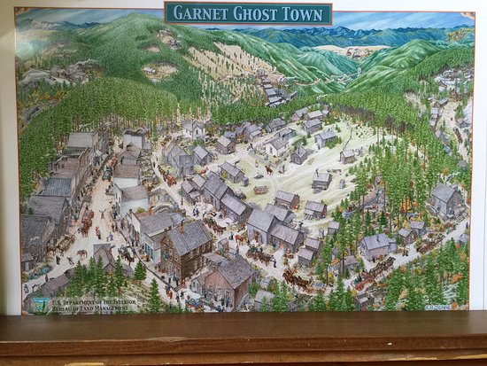
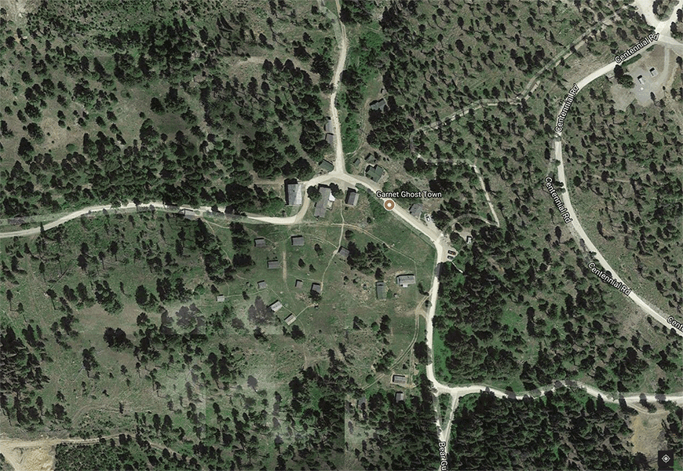
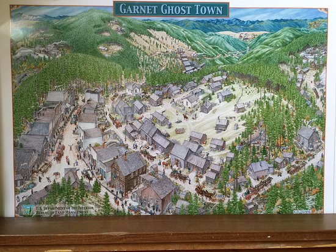
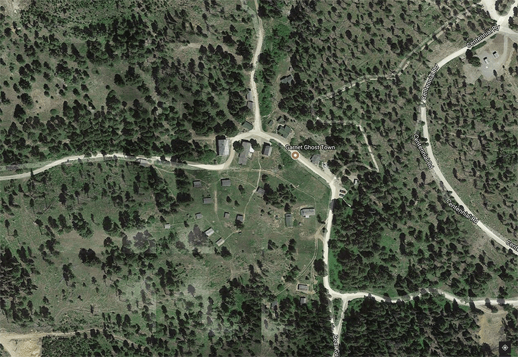
Submission
 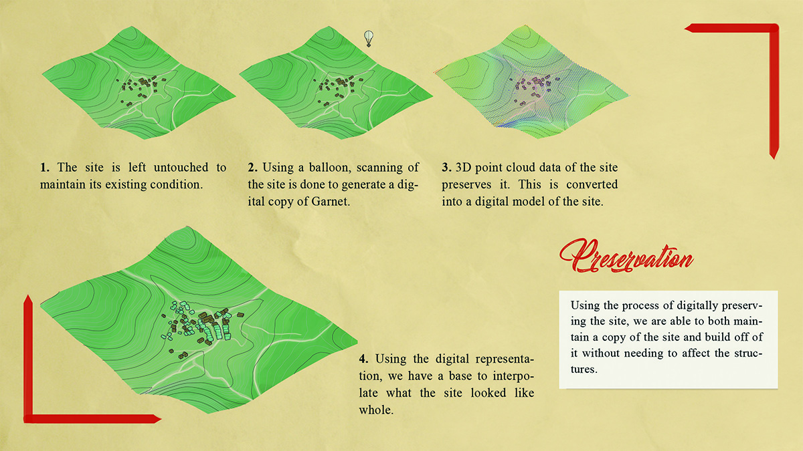
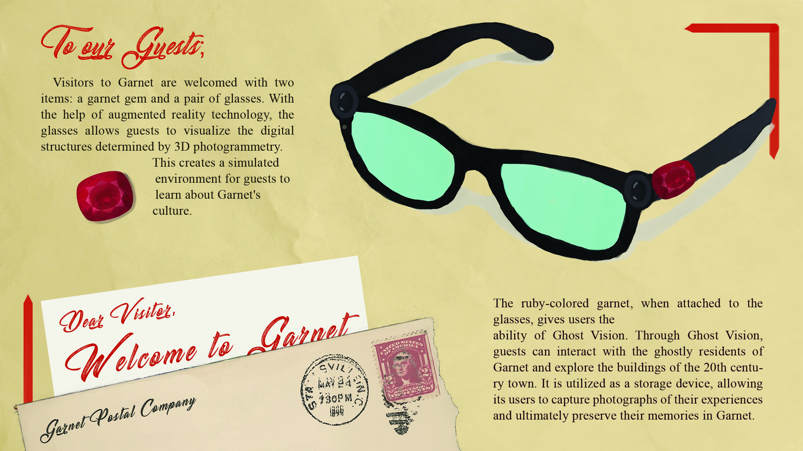
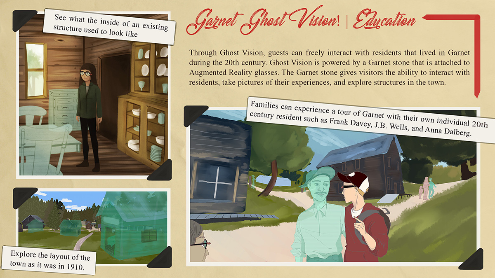
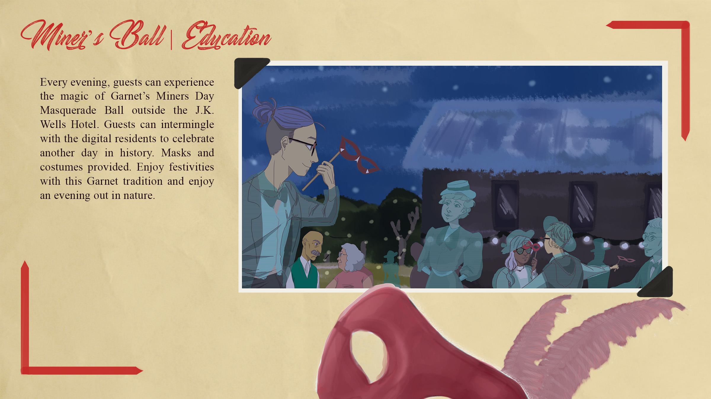
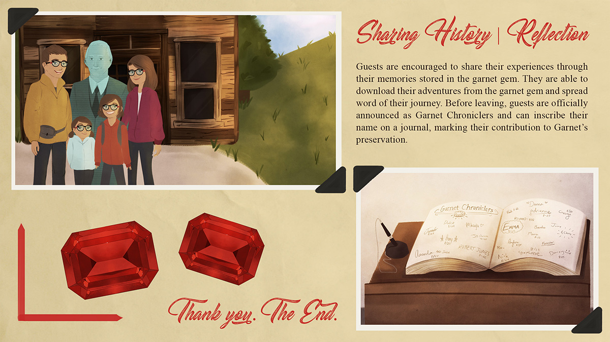
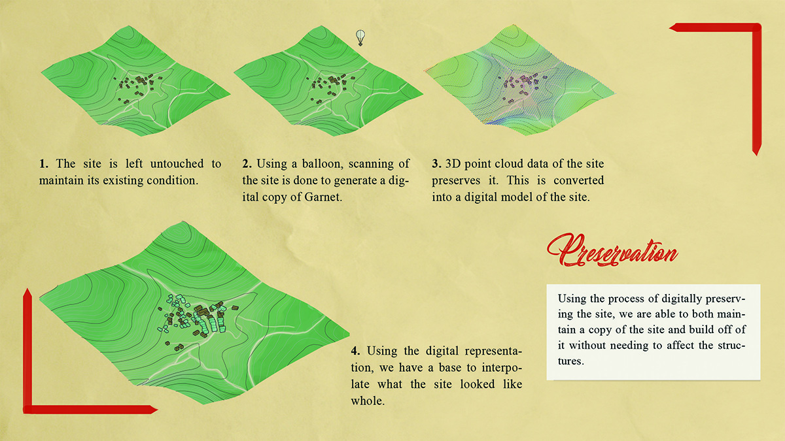
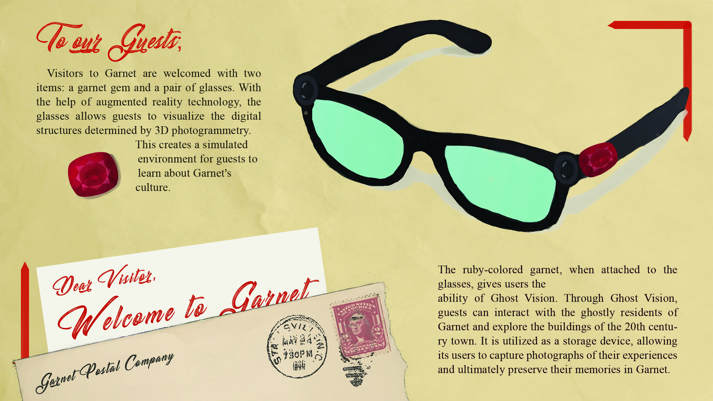
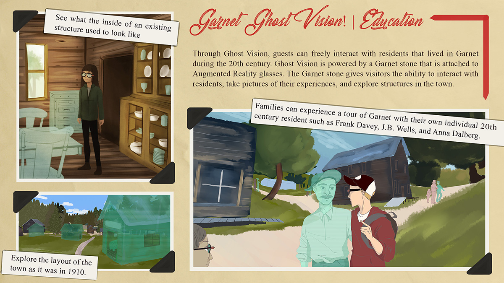
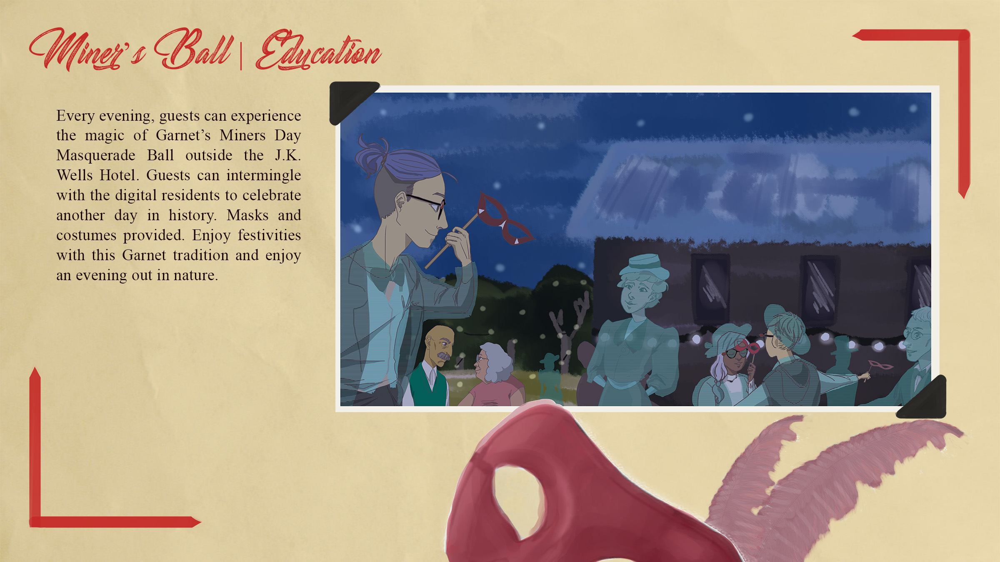
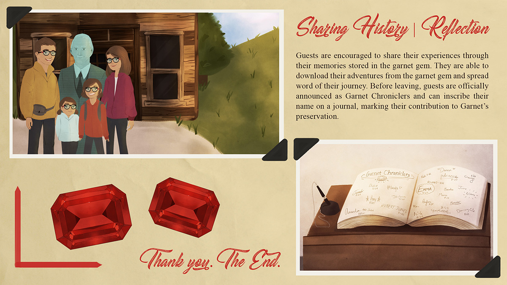
The requirements set on the submission included a single pdf packet, a file size restriction, and a maximum of 6 slides along with two predetermined slides containing our group info, our narrative, and our experience.
Garnet, Montana is one of our countries more well preserved ghost towns. A gold mining town which they found red gem stones in the ground, Garnet boasted a population of over 1000 residents in the early 20th century. Once gold was scarce, the town was slowly abandoned.
To preserve the site, we propose a strategy of creating a digital representation of the site. This acts as both a copy of the site as it stands but also the canvas for us to build a platform for education by reconstructing the town to its former glory.
When guests book their visit, they are presented with their own garnet and augmented reality capable spectacles, Ghost Vision. Not just an ordinary gemstone, the garnet they are given records experiences of their visit to provide the guest with their own preserved memories.
As guests explore Garnet, they use their Ghost Vision glasses to see Garnet as it exists over 100 years ago. A simulation of the towns people allows guests to fully understand life in Garnet. With some famous townsfolk, they even get to converse.
Learning is extended into traditions as guests are indoctrinated into life in Garnet through the Miner's Ball. Past and Present collide in a celebration of tradition and history.
Before they leave, guests sign the hotel's guest list preserving their presence in Garnet for generations to come. They take with them their gemstone and their memories to share as the years go by.
Reflection
Overall, I am ecstatic about the project we developed for the competition. I give a lot of credit to the team I had the pleasure to work with given their dedication, trust for our process, and their ability to communicate openly and with fearlessness to push this project.
Looking back, it becomes clear that we could have better balanced the time we gave early on to the site choosing process. We had two great artists who produced our illustrations, but I would have rather given us time to critique within the process more in order to make even more of the limited space we had for our presentation. With additional time to work on the project, I would have liked to see us build more on the tradition exploration for guests. The site has a history of ghost encounters that we were not able to integrate. It was a small piece, but something we intended on including to widen our audience and expand our topics to educate with.